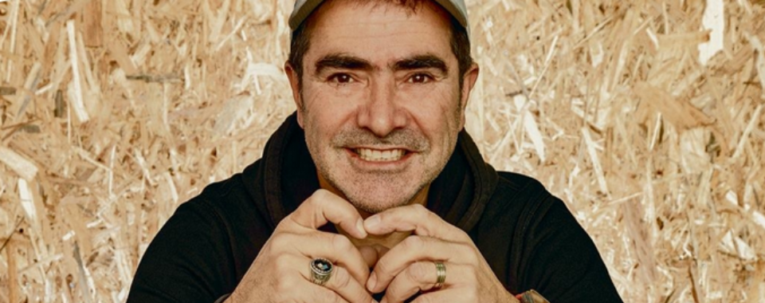

Over FPH
FPH staat voor Fotopersbureau Heerenveen en is in 1997 opgericht door Mustafa Gumussu. Als fotograaf voor klanten als sc Heerenveen, De Rabobank, Univé, Ziggo, Sportstad Heerenveen en Van Wijnen is FPH een begrip in Noord-Nederland. Hoewel de wereld van de fotografie in al deze jaren enorm verandert is, groeit FPH moeiteloos mee door altijd gebruik te maken van de nieuwste technologieën en ontwikkelingen.
Niet achter de zaken aanlopen, maar altijd een stap vooruit denken. Dat is de visie, dat is het doel waarmee FPH u nog vele jaren van dienst kan zijn.
Onze waarden
Een korte kennismaking is altijd gratis en vrijblijvend.